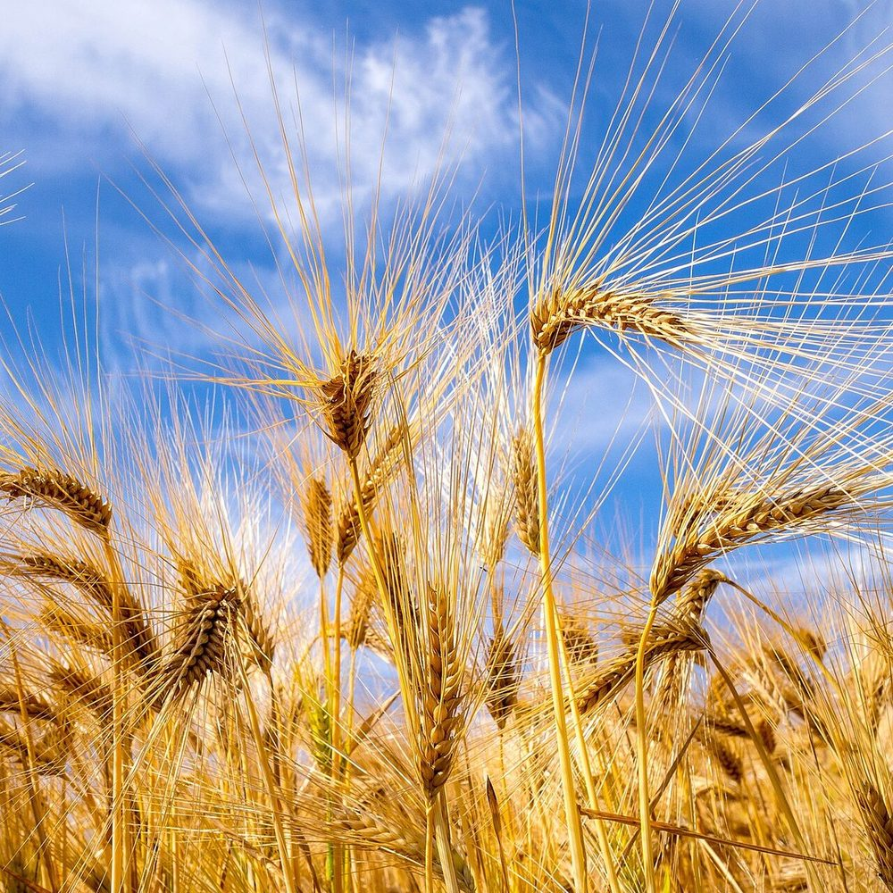

口コミ
このページは、実際のお客様の声ではないイメージ例です。
以下は、このページを見た方の気持ちを想定した制作側の創作文で、実際の声ではありません。

イメージ例一度、ゆっくり立ち寄ってみたいなと思います。
イメージ例どんなお店なのか、ページで分かったらうれしいな。

イメージ例営業時間や場所がすぐ分かるページだったら、友人にも教えたいと思います。
営業時間は準備中です。お電話でご確認ください。
このページは、実際のお客様の声ではないイメージ例です。
以下は、このページを見た方の気持ちを想定した制作側の創作文で、実際の声ではありません。
イメージ例一度、ゆっくり立ち寄ってみたいなと思います。
イメージ例どんなお店なのか、ページで分かったらうれしいな。

イメージ例営業時間や場所がすぐ分かるページだったら、友人にも教えたいと思います。
営業時間は準備中です。お電話でご確認ください。
このサイトの写真は、フリー素材のイメージ写真です。お店の写真ではなく、店舗の実際の様子を示すものではありません。イタリア・ドイツ・インド・スウェーデンなど他地域で撮影された写真を含み、撮影地が不明の写真も含みます。縮小・切り抜きなどの加工をしています。
ライセンス: CC BY 2.0 / CC BY-SA 2.0 / CC BY-SA 3.0 / CC BY-SA 4.0 / CC0